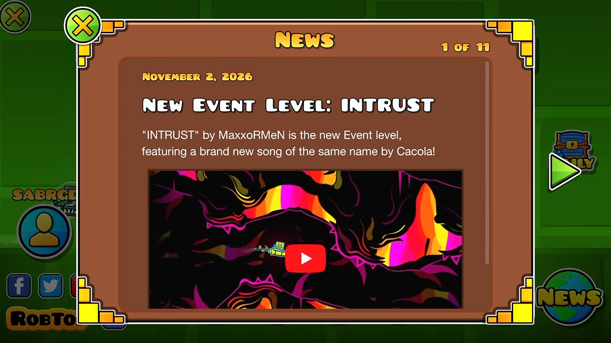

RobTop atualiza a aba de notícias do Geometry Dash após reclamações da comunidade
Após ficar semanas sem receber novidades, a seção finalmente passou a exibir o novo Event Level e o Grave Gauntlet.

A aba de notícias do Geometry Dash recebeu uma atualização de RobTop após jogadores apontarem que a seção estava ficando desatualizada. A mudança adicionou informações sobre o novo Event Level, INTRUST, e o Grave Gauntlet, que já haviam sido lançados anteriormente.
A situação chamou atenção no dia 3 de novembro, quando o jogador Emilio Cedo publicou uma reclamação sobre a falta de atualizações na seção. Na ocasião, ele observou que a aba não recebia novidades desde 18 de outubro, mesmo com o lançamento de novos conteúdos dentro do jogo.
Entre eles estava INTRUST, um novo Event Level que havia sido disponibilizado poucas horas antes da publicação. Apesar de RobTop já ter anunciado o nível em suas redes sociais, a informação ainda não aparecia na seção de notícias do próprio jogo.
A ausência de atualizações também foi percebida por outros jogadores, que questionaram a utilidade de uma ferramenta criada justamente para manter a comunidade informada. A situação se tornou ainda mais curiosa porque os anúncios já estavam sendo publicados fora do jogo, enquanto os jogadores que dependiam exclusivamente das informações disponíveis no menu principal continuavam sem acesso às novidades.
Posteriormente, RobTop atualizou a seção, incluindo tanto INTRUST quanto o Grave Gauntlet. A mudança foi reconhecida por Emilio Cedo, que agradeceu pela atualização, embora tenha ressaltado que as informações teriam sido mais úteis se tivessem sido publicadas no momento dos respectivos lançamentos.
Outro jogador, Cvolton, também comentou sobre a atualização, destacando que os anúncios finalmente haviam chegado à aba oficial.
Apesar da correção, o episódio levantou uma discussão sobre a maneira como as notícias são divulgadas em Geometry Dash. Como muitos jogadores casuais não acompanham as redes sociais de RobTop, a seção dentro do próprio jogo pode ser uma das principais formas de descobrir novos conteúdos.
Uma das sugestões levantadas pela comunidade foi fazer com que a aba de notícias reproduzisse automaticamente os anúncios publicados nas redes sociais oficiais, evitando que informações importantes fiquem disponíveis em outras plataformas, mas ausentes dentro do jogo.
A atualização resolve o problema imediato, mas deixa uma questão em aberto: será que a aba de notícias conseguirá manter uma frequência de atualizações adequada daqui em diante?
YouTube — Zachi
Wiki.gg — Fairy Knife Hell
Geometry Dash History — Fairy Knife Hell